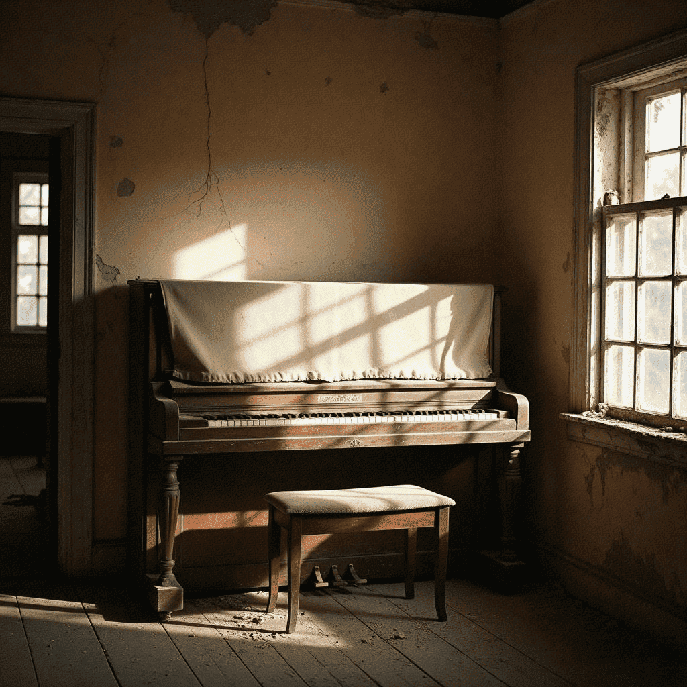
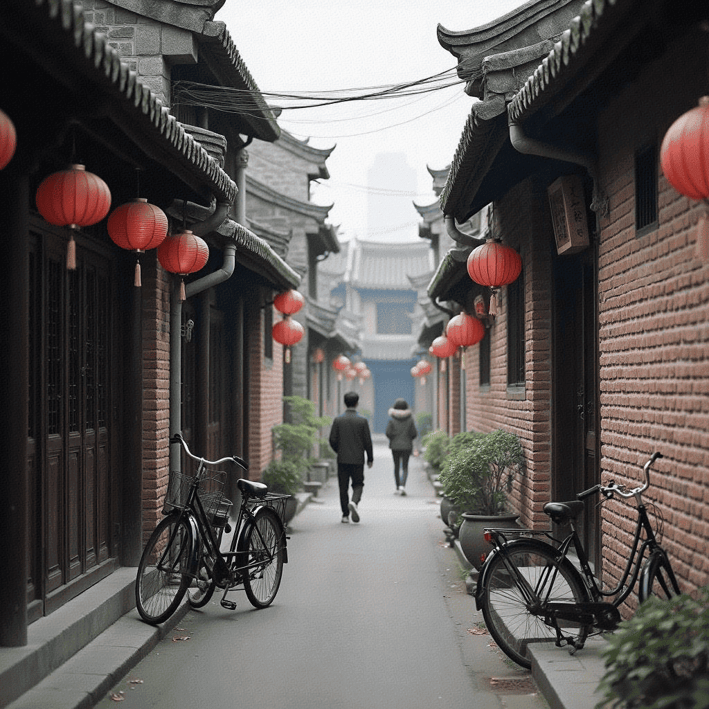

那年立夏，阳光透过弄堂的缝隙，洒在石板路上，暖烘烘的。父亲的三轮车吱吱呀呀地驶了进来，车斗里是一架旧立式钢琴，上面盖着一层厚厚的帆布。
"美玲，快来帮忙！"父亲喊道，额头上的汗珠在阳光下闪闪发光。
我和几个邻居家的孩子立刻围了上去，七手八脚地帮着将钢琴搬进我家那间面积仅有十几平方米的小屋。这是父亲用半年的工资和母亲积攒的布票换来的宝贝，是为了实现我学琴的梦想。
"你那么喜欢听广播里的钢琴曲，现在终于可以自己弹了。"父亲摸着我的头，眼里满是期待。
在物资匮乏的年代，一架钢琴在弄堂里引起了不小的轰动。邻居们纷纷前来参观这个"稀罕物"，有人好奇地按几个琴键，发出零散的音符；也有人悄悄议论，说这是"资产阶级的玩意儿"，不符合工人家庭的身份。
"人生在世，总要有点精神寄托。音乐不分阶级，美的东西谁都可以欣赏。"
父亲这样回应那些不解的目光。后来我才明白，在那个年代说这样的话需要多大的勇气。
我开始在区里的少年宫学琴。每周六早上五点，母亲就把我叫醒，我们坐一个小时的公交车去上课。老师姓林，是一位满头白发的老先生，据说曾在国外音乐学院学习过。
练琴是枯燥的。刚开始，我只能弹一些简单的音阶和练习曲。为了不打扰邻居休息，我在钢琴上铺了一层厚厚的毛毡，减弱声音。即便如此，薄薄的墙壁依然阻挡不了琴声的传播。
渐渐地，邻居们对琴声的态度从抱怨变成了期待。特别是住在隔壁的王阿姨，每次听到《梁祝》的旋律，都会靠在墙边静静聆听，有时眼角还会泛起泪光。后来我才知道，她年轻时也学过钢琴，却因为"文革"而被迫中断。
随着水平提高，我开始在弄堂的小院子里为邻居们举办"音乐会"。几张方凳围成一圈，大人们坐着，孩子们或站或蹲，我坐在中间的钢琴前，弹奏从老师那里学来的曲子。
"有时候最简单的旋律，也能触动人心最柔软的地方。"
记得有一次，我刚弹完《献给爱丽丝》，一位常年卧病在床的老奶奶被家人搀扶着来到院子里，颤巍巍地对我说："小姑娘，你知道吗？听着你的琴声，我仿佛又回到了年轻时代，那时我和老伴在公园跳舞，也是这首曲子..."
最让我难忘的是1979年的那个冬天。邻居家的小男孩得了重病，高烧不退。那时医疗条件有限，他的父母整日愁眉不展。一天晚上，我听见小男孩在哭闹，就轻轻地弹起了《摇篮曲》。奇迹般地，琴声传到隔壁后，小男孩渐渐安静下来，沉沉睡去。
从那以后，每晚八点，我都会为他弹奏一曲。弄堂里的人都知道这个时间，纷纷保持安静。琴声穿过狭窄的弄堂，在寒冷的冬夜里传递着温暖与希望。
后来，我考入了音乐学院，成为一名音乐老师。虽然离开了生活了二十多年的弄堂，但那些琴声和记忆，却永远留在了我的心里。
如今，那架老钢琴依然安放在我的琴房里，虽然已经有些跑音，但每当我弹起它，仿佛又回到了那个阳光透过弄堂缝隙的下午，回到了邻居们围坐在一起聆听的温暖时光。
"音乐是时间的艺术，却能够穿越时间，永不消逝。就像那些藏在弄堂深处的回忆，静静流淌，从未远去。"